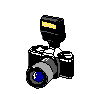
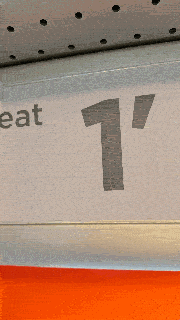
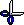
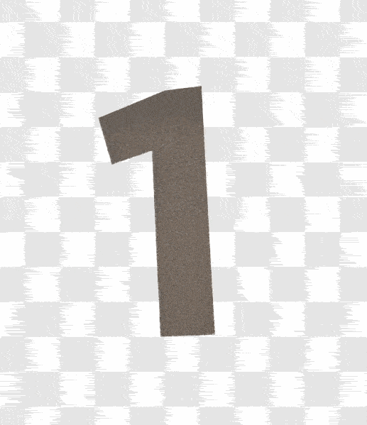
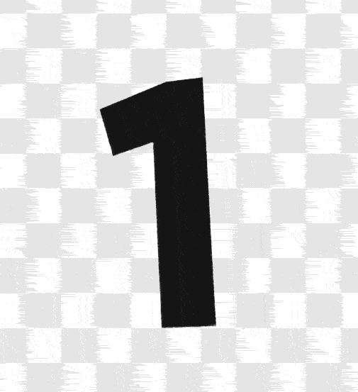
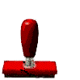
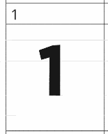

Hack Club announced the YSWS Typeface and I got the idea to take photos on my trip to Thailand and make a font by using a bunch of diffrent letters from diffrent stuff.
I took photos on my way to and in Thailand :-)) Then i cut them out, made them B/W and added them to a Calligraphr template in Affinity.
That process looked something like this:





